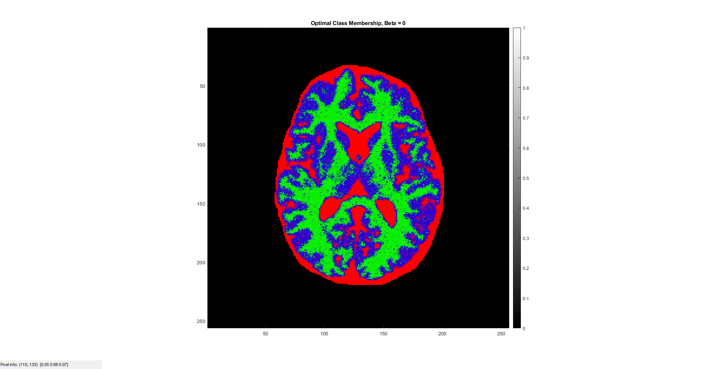

Contents
MyMainScript
clc; close all; clear; % warning('off','all'); % Setting the color scale % my_num_of_colors = 256; col_scale = [0:1/(my_num_of_colors-1):1]'; my_color_scale = [col_scale,col_scale,col_scale]; % Set to_save to 1, if you want to save the generated pictures % to_save = 1; is_color = 1; % Loading and displaying the data % original_data = load('../../data/assignmentSegmentBrainGmmEmMrf.mat'); brain_image = original_data.imageData; brain_mask = original_data.imageMask; old_brain_image = brain_image; % savefig(my_color_scale,brain_image,"Original Brain MRI","Original_Brain_Image.png",0,to_save); % savefig(my_color_scale,brain_mask,"Brain Mask","Brain_Mask.png",0,to_save); brain_image = brain_image .* brain_mask; % savefig(my_color_scale,brain_image,"Brain Image after applying mask","Masked_Brain.png",0,to_save); [h, w, num_chan] = size(brain_image); tic;
Initialisation of parameters
K = 3; Beta = 0.7; class_means = zeros(K,1); class_stds = zeros(K,1); membership = zeros(h,w,K); X = ones(h,w); num_iter = 100; % We use K+1 classes as the background is to be considered as a separate class in addition to the 3 we want to find [label, C] = kmeans(brain_image(:),K+1); label = reshape(label, h,w); X = label; [C, idx] = sort(C); for k=1:K+1 X(label == idx(k)) = k-1; end X (brain_mask==1 & X == 0) = 1; for k=1:K points_k = X==k; class_means(k) = mean(brain_image(points_k)); class_stds(k) = std(brain_image(points_k)); end
Part a
fprintf('Chosen Value of beta = %f \n',Beta);
Chosen Value of beta = 0.700000
Part b
We choose K Means algorithm to initialise the labels as Kmeans performs hard assignment Motivation : We use the labels of K Means which is hard label assignment as the algorithm
% is analytical and is a good starting model. savefig(my_color_scale,X,"Initial Label Image X","Initial_Label_Image.png",0,to_save);
Part c
We choose K Means algorithm to initialise the means Motivation : We use the sample means and standard deviation of the labels as they are the ML estimate for the class means given the labels (which were initialised as above)
fprintf('The initial class means : \n'); disp(class_means); fprintf('The initial class stds : \n'); disp(class_stds);
The initial class means :
0.2781
0.5101
0.6305
The initial class stds :
0.0810
0.0413
0.0358
Part d
Running modified EM
for iter = 1:num_iter % Finding membership in E step [X, membership] = myEStep(X, brain_image, K, Beta, brain_mask, class_means, class_stds, true); % Finding means and stds in M step [class_means, class_stds] = myMStep(K, membership, brain_image, class_means, brain_mask); end
log posterior before : 2321.751639 log posterior after : 6903.047790 log posterior before : 23698.055642 log posterior after : 24329.053163 log posterior before : 27214.702513 log posterior after : 27728.042668 log posterior before : 28306.427707 log posterior after : 28462.846063 log posterior before : 28605.576774 log posterior after : 28766.287269 log posterior before : 28822.651168 log posterior after : 28899.468195 log posterior before : 28916.970550 log posterior after : 28965.390597 log posterior before : 28969.850410 log posterior after : 28972.221510 log posterior before : 28970.964479 log posterior after : 28981.036058 log posterior before : 28980.561101 log posterior after : 28991.095824 log posterior before : 28989.447898 log posterior after : 29000.909979 log posterior before : 28999.237266 log posterior after : 28995.788613 log posterior before : 28994.594336 log posterior after : 29003.894486 log posterior before : 29003.088797 log posterior after : 29004.349228 log posterior before : 29003.913407 log posterior after : 29006.371659 log posterior before : 29005.895195 log posterior after : 29009.909994 log posterior before : 29009.597400 log posterior after : 29009.597400 log posterior before : 29009.458889 log posterior after : 29009.461411 log posterior before : 29009.357876 log posterior after : 29009.357876 log posterior before : 29009.321320 log posterior after : 29009.321320 log posterior before : 29009.307044 log posterior after : 29009.307044 log posterior before : 29009.301147 log posterior after : 29009.301147 log posterior before : 29009.298643 log posterior after : 29009.298643 log posterior before : 29009.297567 log posterior after : 29009.297567 log posterior before : 29009.297102 log posterior after : 29009.297102 log posterior before : 29009.296902 log posterior after : 29009.296902 log posterior before : 29009.296815 log posterior after : 29009.296815 log posterior before : 29009.296777 log posterior after : 29009.296777 log posterior before : 29009.296761 log posterior after : 29009.296761 log posterior before : 29009.296754 log posterior after : 29009.296754 log posterior before : 29009.296751 log posterior after : 29009.296751 log posterior before : 29009.296750 log posterior after : 29009.296750 log posterior before : 29009.296749 log posterior after : 29009.296749 log posterior before : 29009.296749 log posterior after : 29009.296749 log posterior before : 29009.296749 log posterior after : 29009.296749 log posterior before : 29009.296749 log posterior after : 29009.296749 log posterior before : 29009.296749 log posterior after : 29009.296749 log posterior before : 29009.296749 log posterior after : 29009.296749 log posterior before : 29009.296749 log posterior after : 29009.296749 log posterior before : 29009.296749 log posterior after : 29009.296749 log posterior before : 29009.296749 log posterior after : 29009.296749 log posterior before : 29009.296749 log posterior after : 29009.296749 log posterior before : 29009.296749 log posterior after : 29009.296749 log posterior before : 29009.296749 log posterior after : 29009.296749 log posterior before : 29009.296749 log posterior after : 29009.296749 log posterior before : 29009.296749 log posterior after : 29009.296749 log posterior before : 29009.296749 log posterior after : 29009.296749 log posterior before : 29009.296749 log posterior after : 29009.296749 log posterior before : 29009.296749 log posterior after : 29009.296749 log posterior before : 29009.296749 log posterior after : 29009.296749 log posterior before : 29009.296749 log posterior after : 29009.296749 log posterior before : 29009.296749 log posterior after : 29009.296749 log posterior before : 29009.296749 log posterior after : 29009.296749 log posterior before : 29009.296749 log posterior after : 29009.296749 log posterior before : 29009.296749 log posterior after : 29009.296749 log posterior before : 29009.296749 log posterior after : 29009.296749 log posterior before : 29009.296749 log posterior after : 29009.296749 log posterior before : 29009.296749 log posterior after : 29009.296749 log posterior before : 29009.296749 log posterior after : 29009.296749 log posterior before : 29009.296749 log posterior after : 29009.296749 log posterior before : 29009.296749 log posterior after : 29009.296749 log posterior before : 29009.296749 log posterior after : 29009.296749 log posterior before : 29009.296749 log posterior after : 29009.296749 log posterior before : 29009.296749 log posterior after : 29009.296749 log posterior before : 29009.296749 log posterior after : 29009.296749 log posterior before : 29009.296749 log posterior after : 29009.296749 log posterior before : 29009.296749 log posterior after : 29009.296749 log posterior before : 29009.296749 log posterior after : 29009.296749 log posterior before : 29009.296749 log posterior after : 29009.296749 log posterior before : 29009.296749 log posterior after : 29009.296749 log posterior before : 29009.296749 log posterior after : 29009.296749 log posterior before : 29009.296749 log posterior after : 29009.296749 log posterior before : 29009.296749 log posterior after : 29009.296749 log posterior before : 29009.296749 log posterior after : 29009.296749 log posterior before : 29009.296749 log posterior after : 29009.296749 log posterior before : 29009.296749 log posterior after : 29009.296749 log posterior before : 29009.296749 log posterior after : 29009.296749 log posterior before : 29009.296749 log posterior after : 29009.296749 log posterior before : 29009.296749 log posterior after : 29009.296749 log posterior before : 29009.296749 log posterior after : 29009.296749 log posterior before : 29009.296749 log posterior after : 29009.296749 log posterior before : 29009.296749 log posterior after : 29009.296749 log posterior before : 29009.296749 log posterior after : 29009.296749 log posterior before : 29009.296749 log posterior after : 29009.296749 log posterior before : 29009.296749 log posterior after : 29009.296749 log posterior before : 29009.296749 log posterior after : 29009.296749 log posterior before : 29009.296749 log posterior after : 29009.296749 log posterior before : 29009.296749 log posterior after : 29009.296749 log posterior before : 29009.296749 log posterior after : 29009.296749 log posterior before : 29009.296749 log posterior after : 29009.296749 log posterior before : 29009.296749 log posterior after : 29009.296749 log posterior before : 29009.296749 log posterior after : 29009.296749 log posterior before : 29009.296749 log posterior after : 29009.296749 log posterior before : 29009.296749 log posterior after : 29009.296749 log posterior before : 29009.296749 log posterior after : 29009.296749 log posterior before : 29009.296749 log posterior after : 29009.296749 log posterior before : 29009.296749 log posterior after : 29009.296749 log posterior before : 29009.296749 log posterior after : 29009.296749 log posterior before : 29009.296749 log posterior after : 29009.296749 log posterior before : 29009.296749 log posterior after : 29009.296749
Part e
Calculating Results
[class_means, sorted_idx] = sort(class_means); membership_old = membership; membership(:,:,1) = membership_old(:,:,sorted_idx(1)); membership(:,:,2) = membership_old(:,:,sorted_idx(3)); membership(:,:,3) = membership_old(:,:,sorted_idx(2)); opt_class_means = class_means; savefig(my_color_scale,brain_image,"Original Corrupted Image with Mask","Original_Brain_Image_masked.png",0,to_save); savefig(my_color_scale,membership,strcat("Optimal Class Membership, Chosen Beta = ", num2str(Beta)),"Optimal_Class_Membership_Chosen_Beta.png",0,to_save); savefig(my_color_scale,X,strcat("Optimal Label Image for chosen Beta = ", num2str(Beta)),"Optimal_Label_Image_for_chosen_Beta.png",0,to_save);
Running for Beta = 0
K = 3; Beta = 0; class_means = zeros(K,1); class_stds = zeros(K,1); membership = zeros(h,w,K); X = ones(h,w); num_iter = 100; % We use K+1 classes as the background is to be considered as a separate class in addition to the 3 we want to find [label, C] = kmeans(brain_image(:),K+1); label = reshape(label, h,w); X = label; [C, idx] = sort(C); for k=1:K+1 X(label == idx(k)) = k-1; end X (brain_mask==1 & X == 0) = 1; for k=1:K points_k = X==k; class_means(k) = mean(brain_image(points_k)); class_stds(k) = std(brain_image(points_k)); end fprintf('Beta = %f \n',Beta);
Beta = 0.000000
Running modified EM for Beta = 0
for iter = 1:num_iter % Finding membership in E step [X, membership] = myEStep(X, brain_image, K, Beta, brain_mask, class_means, class_stds, true); % Finding means and stds in M step [class_means, class_stds] = myMStep(K, membership, brain_image, class_means, brain_mask); end
log posterior before : 13244.129863 log posterior after : 13442.624958 log posterior before : 20631.848246 log posterior after : 21712.527703 log posterior before : 24085.706165 log posterior after : 24152.649947 log posterior before : 25631.609591 log posterior after : 25750.163130 log posterior before : 26624.396671 log posterior after : 26715.762394 log posterior before : 27270.072339 log posterior after : 27351.618750 log posterior before : 27750.134210 log posterior after : 27801.254339 log posterior before : 28104.263593 log posterior after : 28132.306652 log posterior before : 28371.186955 log posterior after : 28382.685940 log posterior before : 28575.399588 log posterior after : 28580.548069 log posterior before : 28743.691619 log posterior after : 28746.353334 log posterior before : 28891.426514 log posterior after : 28892.538816 log posterior before : 29026.795295 log posterior after : 29027.334824 log posterior before : 29156.261363 log posterior after : 29156.554782 log posterior before : 29283.975866 log posterior after : 29284.181716 log posterior before : 29412.774396 log posterior after : 29412.972153 log posterior before : 29544.637464 log posterior after : 29544.852956 log posterior before : 29681.183243 log posterior after : 29681.400247 log posterior before : 29823.534594 log posterior after : 29823.734577 log posterior before : 29972.714528 log posterior after : 29972.956628 log posterior before : 30129.850903 log posterior after : 30130.063073 log posterior before : 30295.983225 log posterior after : 30296.208279 log posterior before : 30472.186661 log posterior after : 30472.389484 log posterior before : 30659.482908 log posterior after : 30659.731297 log posterior before : 30859.536437 log posterior after : 30859.920277 log posterior before : 31073.929266 log posterior after : 31074.270443 log posterior before : 31304.114813 log posterior after : 31304.481666 log posterior before : 31552.006033 log posterior after : 31552.338603 log posterior before : 31819.243603 log posterior after : 31819.679364 log posterior before : 32107.893544 log posterior after : 32108.374037 log posterior before : 32419.294249 log posterior after : 32419.819637 log posterior before : 32754.099012 log posterior after : 32754.746115 log posterior before : 33111.352195 log posterior after : 33112.129962 log posterior before : 33487.761096 log posterior after : 33488.422837 log posterior before : 33875.907415 log posterior after : 33876.450806 log posterior before : 34263.977643 log posterior after : 34264.512386 log posterior before : 34636.421713 log posterior after : 34636.936452 log posterior before : 34975.723567 log posterior after : 34976.305233 log posterior before : 35267.041883 log posterior after : 35267.850686 log posterior before : 35502.884437 log posterior after : 35503.765785 log posterior before : 35683.204558 log posterior after : 35683.874732 log posterior before : 35814.605718 log posterior after : 35814.928659 log posterior before : 35906.707799 log posterior after : 35907.072901 log posterior before : 35970.245265 log posterior after : 35970.517262 log posterior before : 36013.395436 log posterior after : 36013.561228 log posterior before : 36042.505321 log posterior after : 36042.595647 log posterior before : 36062.113855 log posterior after : 36062.194962 log posterior before : 36075.402107 log posterior after : 36075.452822 log posterior before : 36084.376401 log posterior after : 36084.385451 log posterior before : 36090.409630 log posterior after : 36090.416534 log posterior before : 36094.495991 log posterior after : 36094.500012 log posterior before : 36097.266499 log posterior after : 36097.266499 log posterior before : 36099.142690 log posterior after : 36099.143678 log posterior before : 36100.419901 log posterior after : 36100.420806 log posterior before : 36101.289161 log posterior after : 36101.289161 log posterior before : 36101.879918 log posterior after : 36101.879918 log posterior before : 36102.281975 log posterior after : 36102.281975 log posterior before : 36102.555638 log posterior after : 36102.555638 log posterior before : 36102.741884 log posterior after : 36102.741884 log posterior before : 36102.868591 log posterior after : 36102.868591 log posterior before : 36102.954742 log posterior after : 36102.954742 log posterior before : 36103.013268 log posterior after : 36103.013268 log posterior before : 36103.052987 log posterior after : 36103.052987 log posterior before : 36103.079906 log posterior after : 36103.079931 log posterior before : 36103.098168 log posterior after : 36103.098168 log posterior before : 36103.110486 log posterior after : 36103.110486 log posterior before : 36103.118789 log posterior after : 36103.118789 log posterior before : 36103.124369 log posterior after : 36103.124369 log posterior before : 36103.128108 log posterior after : 36103.128108 log posterior before : 36103.130604 log posterior after : 36103.130604 log posterior before : 36103.132263 log posterior after : 36103.132263 log posterior before : 36103.133360 log posterior after : 36103.133360 log posterior before : 36103.134080 log posterior after : 36103.134080 log posterior before : 36103.134549 log posterior after : 36103.134549 log posterior before : 36103.134852 log posterior after : 36103.134852 log posterior before : 36103.135045 log posterior after : 36103.135045 log posterior before : 36103.135166 log posterior after : 36103.135166 log posterior before : 36103.135240 log posterior after : 36103.135240 log posterior before : 36103.135284 log posterior after : 36103.135284 log posterior before : 36103.135309 log posterior after : 36103.135309 log posterior before : 36103.135322 log posterior after : 36103.135322 log posterior before : 36103.135328 log posterior after : 36103.135328 log posterior before : 36103.135330 log posterior after : 36103.135330 log posterior before : 36103.135329 log posterior after : 36103.135329 log posterior before : 36103.135327 log posterior after : 36103.135327 log posterior before : 36103.135325 log posterior after : 36103.135325 log posterior before : 36103.135323 log posterior after : 36103.135323 log posterior before : 36103.135320 log posterior after : 36103.135320 log posterior before : 36103.135318 log posterior after : 36103.135318 log posterior before : 36103.135317 log posterior after : 36103.135317 log posterior before : 36103.135315 log posterior after : 36103.135315 log posterior before : 36103.135314 log posterior after : 36103.135314 log posterior before : 36103.135313 log posterior after : 36103.135313 log posterior before : 36103.135312 log posterior after : 36103.135312 log posterior before : 36103.135311 log posterior after : 36103.135311 log posterior before : 36103.135311 log posterior after : 36103.135311 log posterior before : 36103.135310 log posterior after : 36103.135310 log posterior before : 36103.135310 log posterior after : 36103.135310 log posterior before : 36103.135310 log posterior after : 36103.135310 log posterior before : 36103.135310 log posterior after : 36103.135310
Calculating Results for Beta = 0
[class_means, sorted_idx] = sort(class_means); membership_old = membership; membership(:,:,1) = membership_old(:,:,sorted_idx(1)); membership(:,:,2) = membership_old(:,:,sorted_idx(3)); membership(:,:,3) = membership_old(:,:,sorted_idx(2)); savefig(my_color_scale,membership,strcat("Optimal Class Membership, Beta = ", num2str(Beta)),"Optimal_Class_Membership_Beta_0.png",0,to_save); savefig(my_color_scale,X,strcat("Optimal Label Image for Beta = ", num2str(Beta)),"Optimal_Label_Image_for_Beta_0.png",0,to_save);
Part f
fprintf('The optimal class means for chosen Beta: \n'); disp(opt_class_means); toc; % Helper function to save the figures % function savefig(my_color_scale,modified_pic,title_name,file_name,is_color,to_save) if to_save==1 fig = figure('units','normalized','outerposition',[0 0 1 1]); colormap(my_color_scale); else fig = figure; colormap(my_color_scale); end if is_color == 1 colormap jet; else colormap(gray); end imagesc(modified_pic), title(title_name), colorbar, daspect([1 1 1]), axis tight; impixelinfo(); if to_save == 1 saveas(fig,file_name); % close(fig); end end
The optimal class means for chosen Beta:
0.3056
0.5227
0.6323
Elapsed time is 80.730217 seconds.